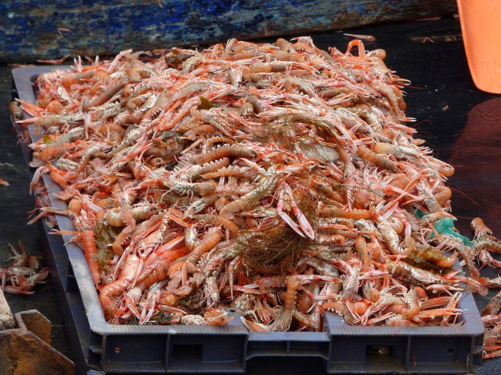
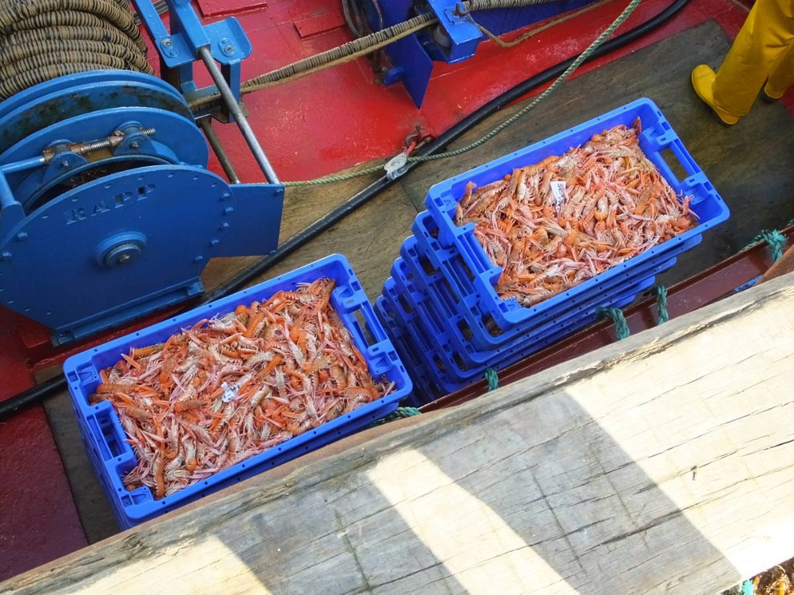
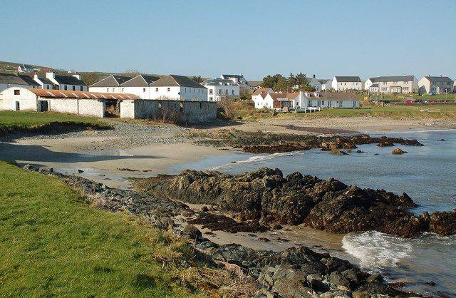

Islay's boats land lobster, crab, scallops and langoustines, and a few places cook them very well. One is in Port Ellen itself, a walk from the house.
SeaSalt Bistro, Port Ellen. Scores 4.4 on Google from about 900 reviews, and reviewers single out the scallops. Starters run from £8 to £14 and mains from £14 to £32: Cullen skink £11, fish and chips £18.50, seafood linguine £26, sirloin £32, plus Islay lobster and langoustines on the specials board. Dinner runs in two sittings, from 17:00 and 19:30. Closed Mondays.
Port Charlotte Hotel. Seafood platters are the house speciality, with lunch from 12:00 to 14:00 and dinner from 18:00 to 21:00. There's live traditional music on Wednesday and Sunday evenings through the summer.
Lochindaal Seafood Kitchen, Port Charlotte. A small bar and restaurant buying its catch straight off the boats at the quay. Order the seafood platter 24 hours ahead.
Ardbeg House, Port Ellen. Ardbeg's new hotel restaurant, open to non-residents, with Islay seafood and a big whisky list. See the Ardbeg page.
SeaSalt Bistro →What it looks like



Photographs from Wikimedia Commons: Andrew Wood, CC BY-SA 2.0; Thomas Nugent, CC BY-SA 2.0; sylvia duckworth, CC BY-SA 2.0; Mary and Angus Hogg, CC BY-SA 2.0. Prices are 2026 figures in pounds, with rand at £1 = R22.19. Check before booking.